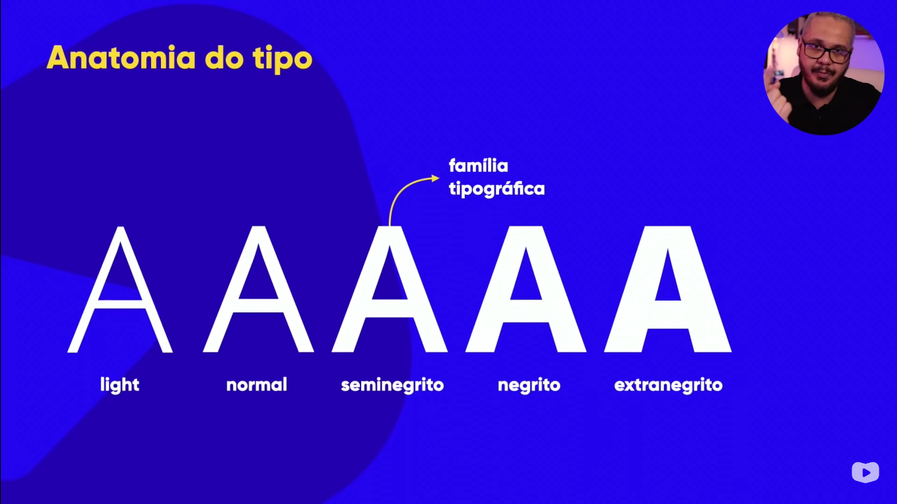

Acesse o PDF com a parte teórica
Itens métricos:
Itens anatômicos: geométricos e corporais (algumas fontes não tem alguns desses itens)
Prolongamento em algumas fontes, chamado de serifa. Nem todas tem serifa.
Sua importância: cria uma linha imaginária, facilitando a leitura das palavras.
Haste: são as linhas verticais; filete e arco: linhas que conectam hastes; esporão: trás ideia de que a letra não irá cair.
Glifos são chamados também de caracteres/letras. O conjunto de glifos forma a fonte.
Há várias formas de representação do mesmo glifo: light, normal, semibold, bold, extrabold. Isso forma a família tipografica. Nem todas as fontes tem uma família.
Existem as serifadas, as não-serifadas (chamadas de sans-serif)
RECOMENDAÇÃO: Textos muito longos para impressão em TELA, opte por sans-serif. Em impressão em papel ainda é recomendado serifadas.
Há fontes monoespaçadas também, que podem ser serifadas ou não. Esse tipo de fonte todos caracteres/glifos tem a mesma largura.
As fontes handwriting simula escrita à mão
Fontes display: não tem um padrão, ou tem muito pouco. Não obedece às regras
Acesse a própria página